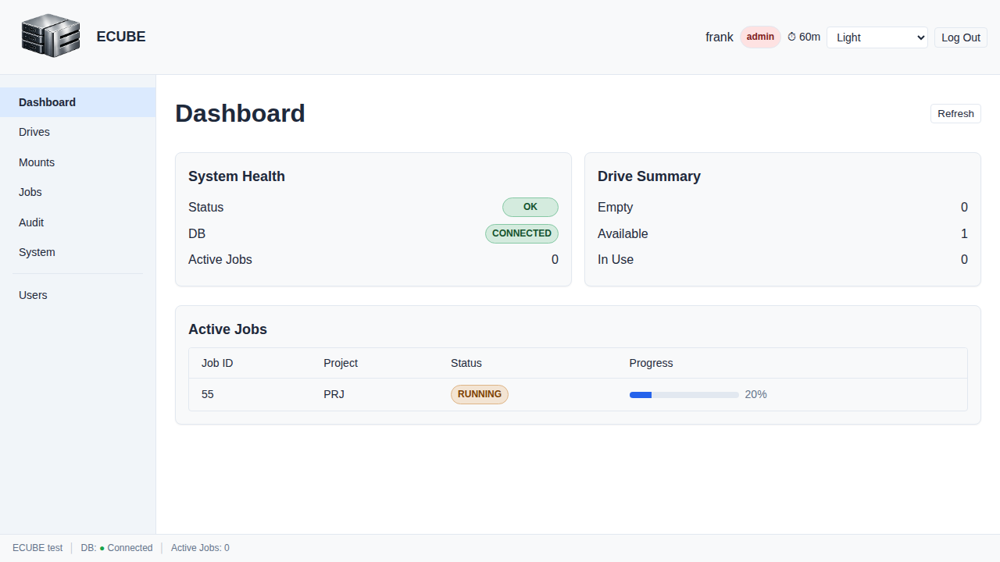
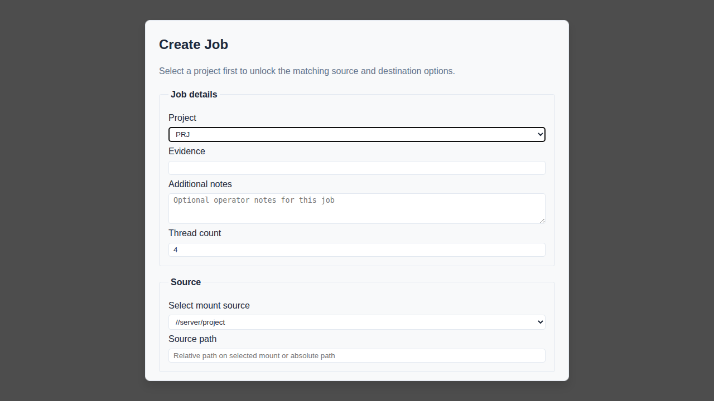
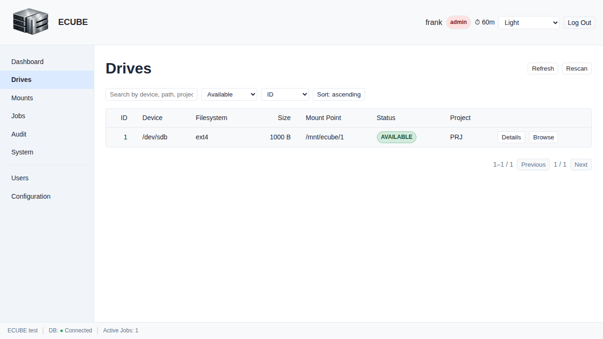
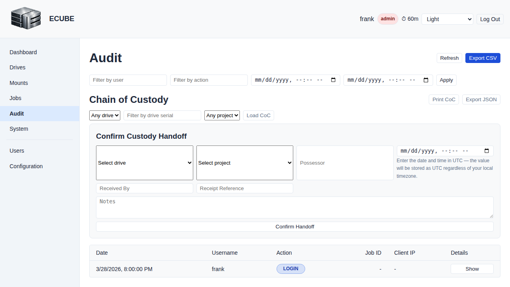

Manual operator-driven copying
- Broad access to source and destination filesystems
- Inconsistent process between operators and matters
- Harder chain-of-custody review and reporting
Software platform and turnkey appliance
ECUBE moves approved case data from network shares to encrypted USB drives through a governed, audited, browser-based workflow built for legal, forensic, and compliance teams.
Why ECUBE
Software
ECUBE gives operations teams a controlled way to export evidence with visibility, auditability, automation support, and a simple interface that stays focused on each user’s role and task.
Capture authentication, job activity, verification, and device events for review and reporting.
Separate admin, manager, processor, and auditor responsibilities with least-privilege workflows.
Browser-based screens keep each operator on the task in front of them without unnecessary clutter.
Integrate with enterprise systems using REST APIs, webhooks, and documented workflows.
Verification, manifest generation, and chain-of-custody visibility help support defensibility.
Support branded, browser-driven deployments for internal or customer-facing operations.
Product screenshots




Appliances
ECUBE appliances combine secure workflow software with purpose-built hardware so teams can deploy a ready-to-use export station without workstation guesswork.
Best for smaller teams and controlled project workflows.
Best for higher concurrency, service operations, and busy export schedules.
Best for large-scale multi-party deliveries and sustained throughput needs.
Security & Compliance
Admins, managers, processors, and auditors each see the tools and permissions appropriate to their role.
Drives are bound to a project before use to help prevent cross-project contamination.
Audit logs track authentication, copy, verification, and device events in structured form.
Supports NFS and SMB workflows, browser-based operation, and integration with automation tooling.
Demo
The ECUBE demo path is designed to show the real interface and core workflow using sanitized sample data and guided evaluation scenarios.
Contact
Whether you need a software-led deployment or a turnkey export station, ECUBE can be sized for your throughput, compliance, and operational model.